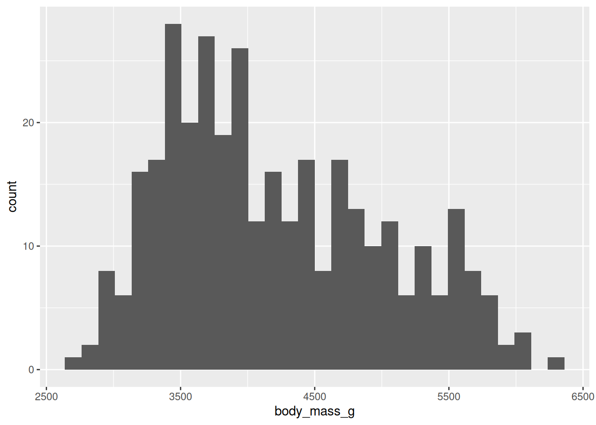
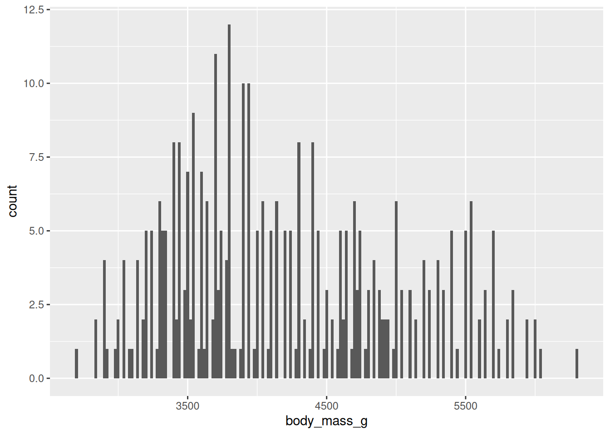
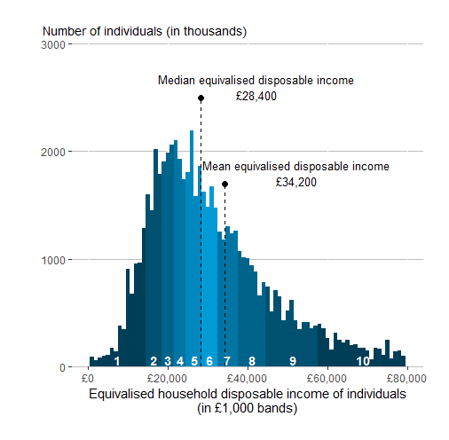
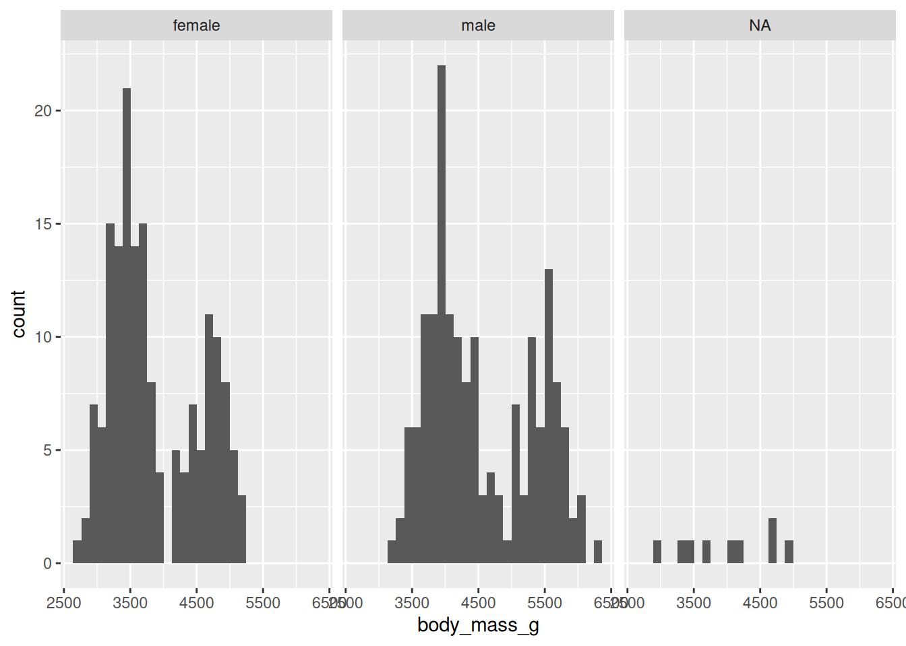
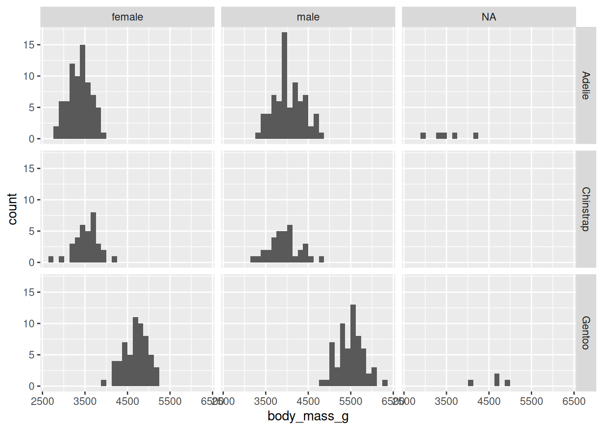

7 Visualising distributions
The first step for determining if data are Normally distributed is to inspect it visually.
(Next week we’ll learn two different statistical tests for Normality, but this week we’ll stick to visual inspection.)
7.1 Basic histograms
Histograms are used to plot one variable at a time, with the observed value of the variable on the x-axis and the number of observations of each value on the y-axis.
The code below will generate a histogram of the body mass data.
For most ggplot figures, the aesthetic function (aes()) must include two variables, x and y - note that this is not the case for histograms, which only plot one variable at a time.
Type it into your script and run it. Talk to a neighbour and make sure that you both understand what each part is doing.
# Box plot of petal length by species
ggplot(data = pengdata, aes(x = body_mass_g)) +
geom_histogram()
When you make a histogram, you may get a message about bin sizes. This is R trying to be helpful and let you know about different ways you can modify the code.
Note that it mentions an argument for the geom_histogram() function called binwidth. Add it now and try out different values to choose a bin width that you think is the most helpful. (Some suggested extreme values to try: 20 and 500.)
(There is also a warning about removing two rows that we’ll get to later - you can ignore it for now.)
# Box plot of petal length by species
ggplot(data = pengdata, aes(x = body_mass_g)) +
geom_histogram(binwidth = 20)
Q: Do the data look Normally distributed? Why or why not?
Some types of variables are not Normally distributed because of the nature of the variable itself.
For example, measures of income are usually quite right-skewed, because it’s bounded by zero on the left but can go up to many times the median and mean values on the right.

Our penguin body mass data look quite right-skewed, similar to this disposable income distribution.
However, in this case, it might not be be because of the nature of the variable itself - body mass - but rather because there is a hidden structure to the data that is making it not Normal.
7.2 Using a facet wrap to split data by another variable
Let’s try to make some histograms where we split the data by other variables that might be important for determining body mass: species and sex. (We’ll go back to letting R use the default bin width.)
we’ll use a function in ggplot called facet_wrap().
Facet-wrapping allows you to split data into multiple panels by another variable, in this case species or sex.
To make a face wrap:
- Add another layer - with a plus sign!
- Use the
facet_wrap()function - It needs an argument -
vars()with the name of the variable you are splitting by inside
Type and run the following code:
ggplot(data = pengdata, aes(x = body_mass_g)) +
geom_histogram() +
facet_wrap(vars(sex))
#> `stat_bin()` using `bins = 30`. Pick better value
#> `binwidth`.
#> Warning: Removed 2 rows containing non-finite outside the scale
#> range (`stat_bin()`).
Q:
Do the data look Normally distributed when split by sex? Why or why not?
Do you notice anything else surprising about the data?
Hopefully you noticed that for some of the penguins they were unable to determine their sex, so it is listed as “NA”. We’ll show how to remove this data in the next section.
For now, copy and paste your histogram code to create a copy.
Modify the copied code to split the data by species instead of sex.
Hint: You will have to modify the name of the variable inside of the vars() function.
Q: Do the data look Normally distributed when split by species? Why or why not?
7.3 Using a facet grid to split data by two variables
We can use a similar function called facet_grid() to split our data by two variables at the same time.
ggplot(data = pengdata, aes(x = body_mass_g)) +
geom_histogram() +
facet_grid(vars(species), vars(sex))
#> `stat_bin()` using `bins = 30`. Pick better value
#> `binwidth`.
#> Warning: Removed 2 rows containing non-finite outside the scale
#> range (`stat_bin()`).